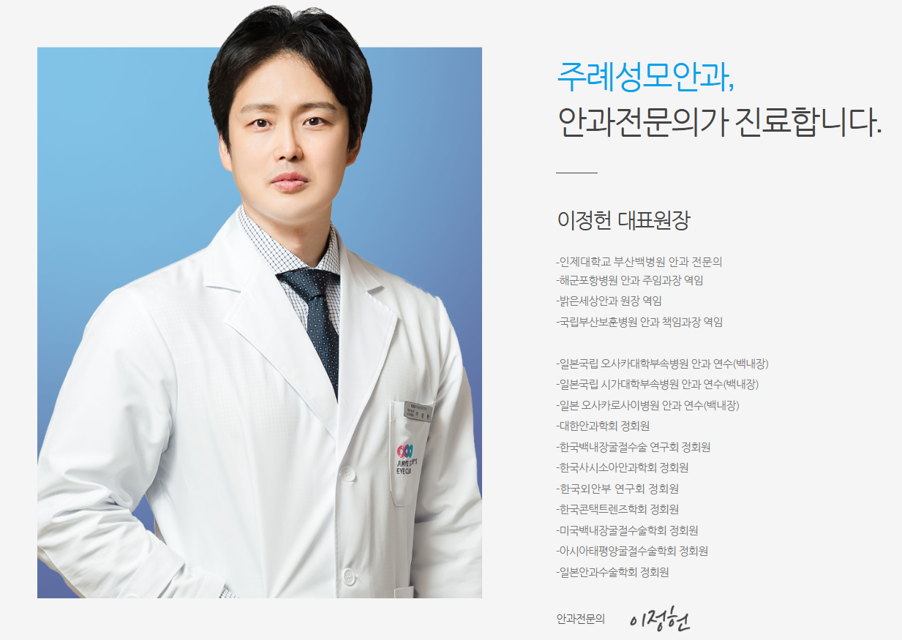

안과 전문의 · 대표원장
이정헌
- 인제대학교 부산백병원 안과 전문의
- 해군포항병원 안과 주임과장 역임
- 밝은세상안과 원장 역임
- 국립부산보훈병원 안과 책임과장 역임
제공된 기획안의 의료진 소개 자료를 기준으로 작성했습니다.
JURYE ST. MARY’S EYE CLINIC
3인의 분야별 안과 전문의가 함께합니다.


안과 전문의 · 대표원장
제공된 기획안의 의료진 소개 자료를 기준으로 작성했습니다.
SPECIALIST
분야별 안과 전문의의 상세 프로필은 확인 후 안내드립니다.
SPECIALIST
분야별 안과 전문의의 상세 프로필은 확인 후 안내드립니다.
의료진의 성함·사진·세부 약력은 확인된 자료에 맞춰 업데이트할 예정입니다.